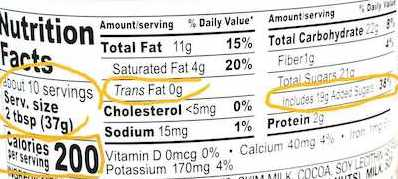

Why You Should Read Your Food Labels

Packaged foods and drinks—the types that come in cans, boxes, bottles, jars, and bags—have a lot of nutrition and food safety information on their labels or packaging. Reading them is the first step in making informed decisions about what
you consume.
The U.S. Food and Drug Administration (FDA made the first major update to the food labels in over 20 years. The label's updated information makes it easier for consumers to be informed on food items that could contribute to healthy eating
habits. The updated food label includes mandatory information about “added sugars” and “trans-fat.” Because Americans do not always get enough vitamin D and potassium, the updated food label includes serving information for both of these
nutrients.
Serving Sizes
At the top of the Nutrition Facts label, you will find the total number of servings in the container. You will also find the serving size of the food or drink. The serving size on the label is based on the
amount of food that people typically eat at one time and is not a recommendation of how much to eat. It is important to pay attention to the serving size, especially how many servings there are in the food package. For example, in the
sample label, one serving of Nutella spread equals two tablespoons. If you ate four cups, you would be consuming two servings. That is two times the calories and nutrients shown in the sample label.
Calories
Another thing to pay attention to is the calories. The calories listed is usually per serving size. The updated food label lists the number of calories in one serving size in larger print than before so it
is easier to see. The amount of calories listed provide a measure of how much energy you get from a serving of the food. The number of servings you consume determines the number of calories you actually eat. In the example, there are 200
calories in one serving of Nutella, which is two tablespoons. What if you ate six tablespoons with your breakfast? Then, you would consume three servings, or 600 calories. That will be about a quarter of the recommended daily calorie
consumption. To achieve or maintain a healthy body weight, balance the number of calories you eat and drink with the number of calories your body uses.
Nutrition
The nutrition information on the package is usually based on one serving of the food or drink. However, if the entire package of the food can be consumed in one sitting- such as a 16oz bottle of
soda-the label will have two columns. The
first column will be nutrition information based on a single serving and the second column will be nutrition information based on the entire package. If you eat a whole package of food that has four servings, you will get four times
as many nutrients, sugar, and fat as are in one serving.
You can use the label to support your personal dietary needs. Look for foods that contain more of the nutrients you want to get more of and less of the nutrients you may want to limit.
Daily Percentage
The % Daily Value (%DV) is the percentage of the Daily Value for each nutrient in a serving of the food. The Daily Values are amounts usually in grams, milligrams, or micrograms, of nutrients to
consume or not to exceed each day.
The %DV shows how much a nutrient in a serving of a food contributes to a total daily diet.
It can tell you if a serving of food is high or low in a nutrient and whether a serving of the food contributes a lot, or a little, to your daily diet for each nutrient.